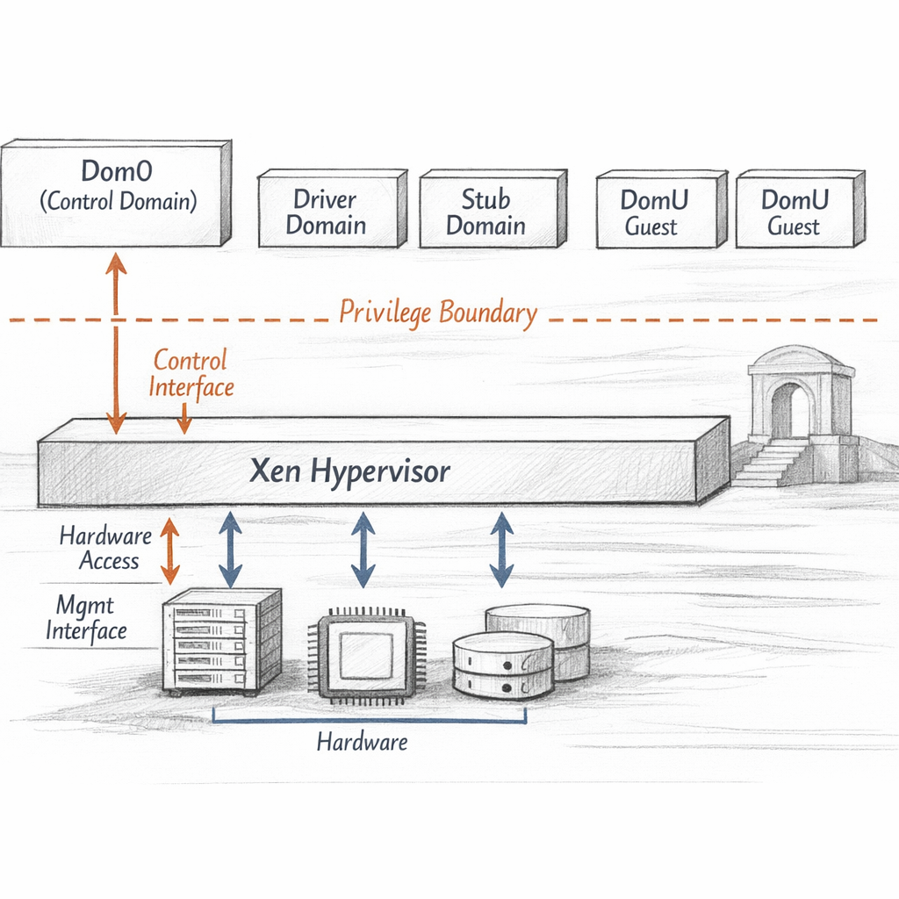
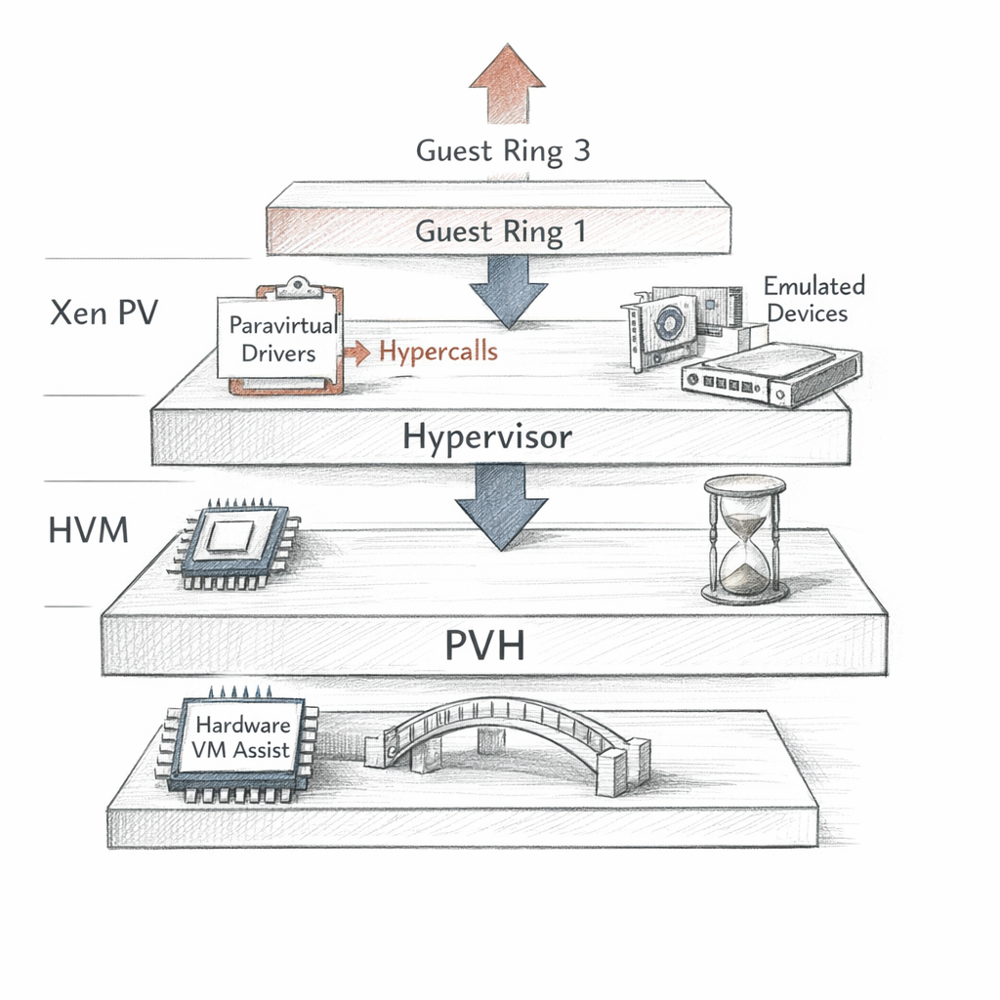
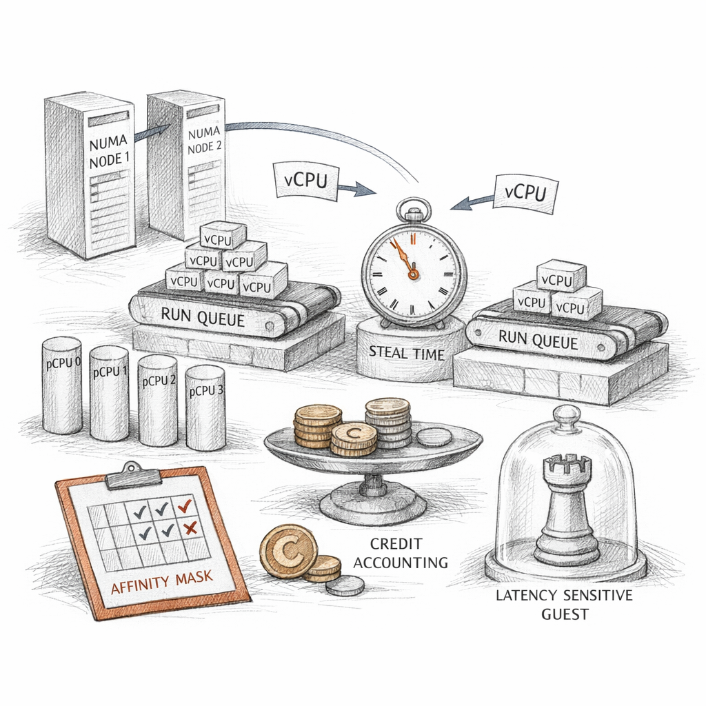
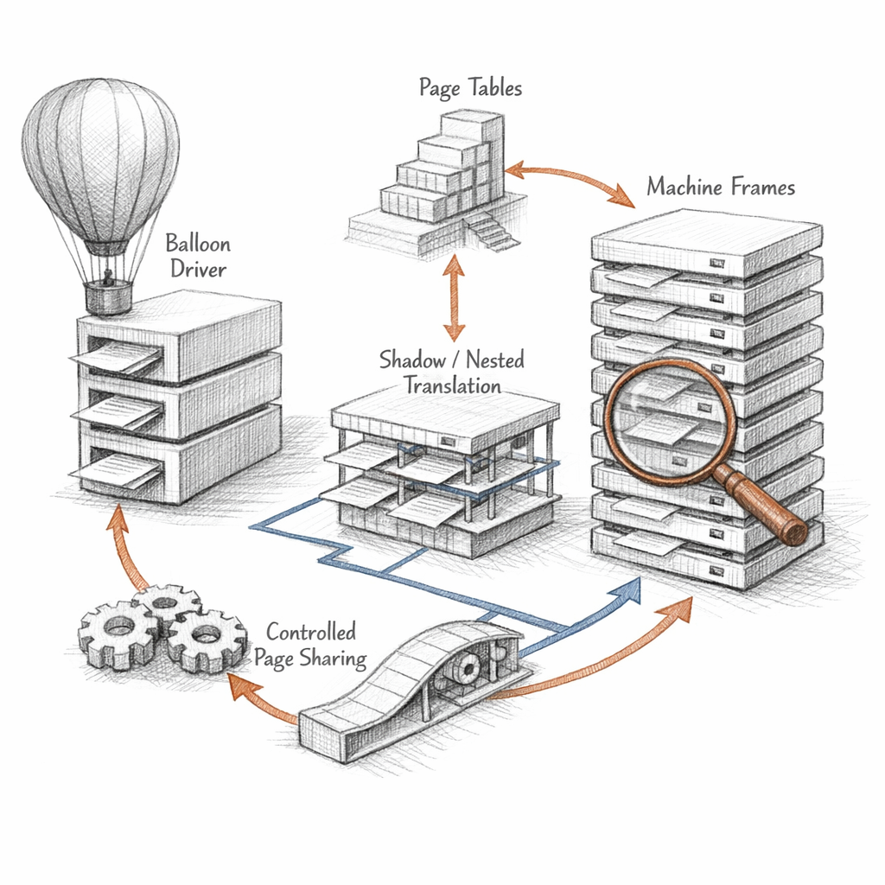
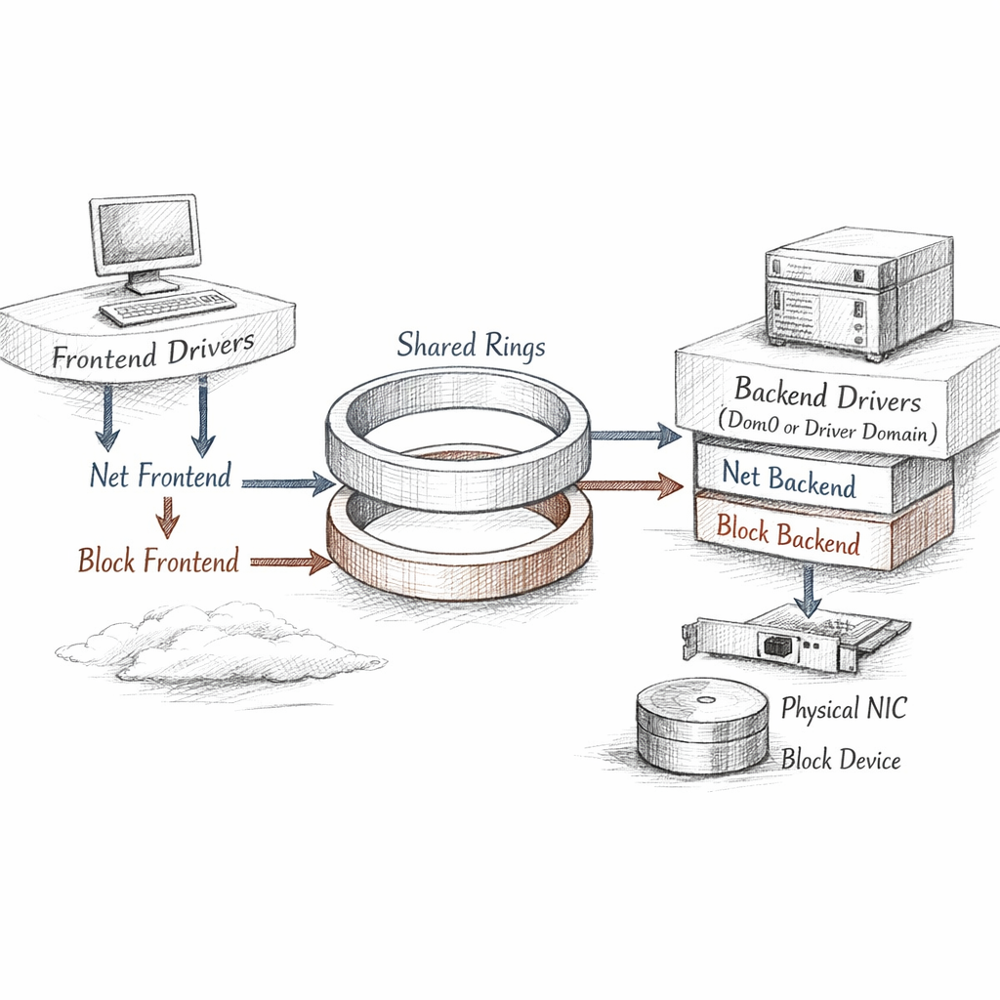
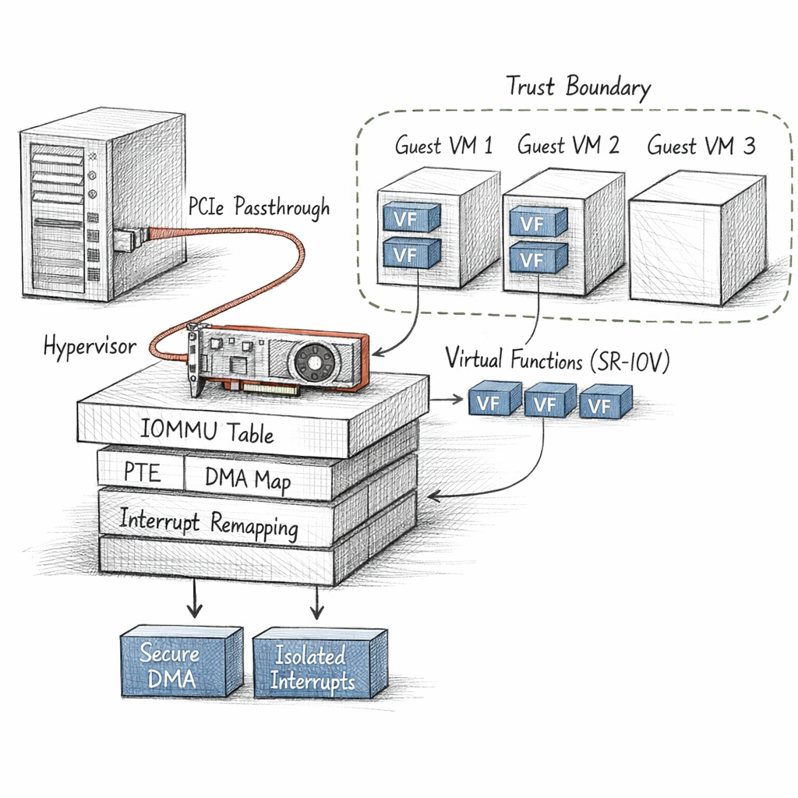
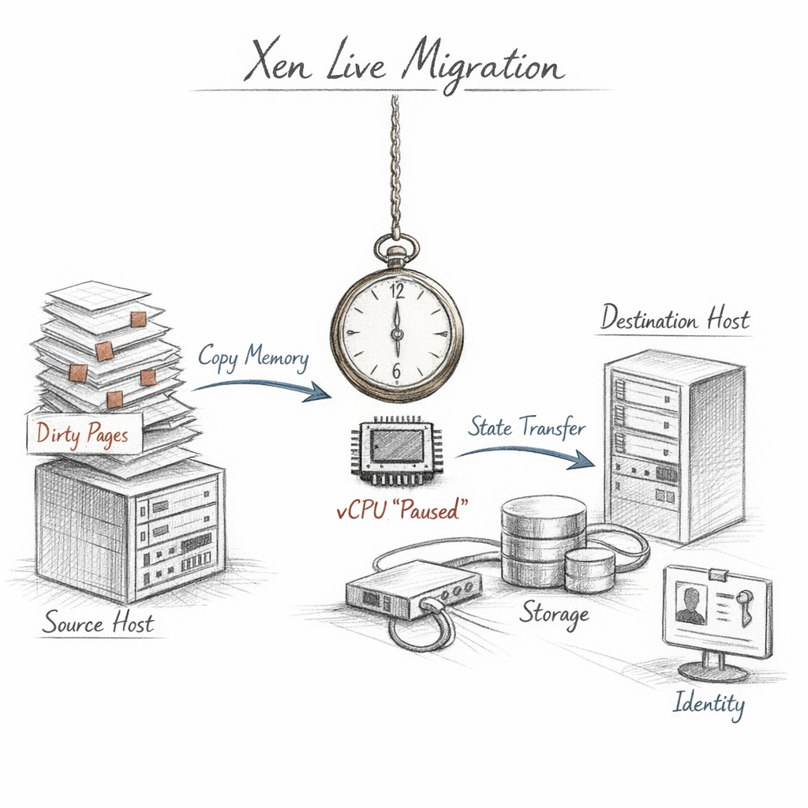
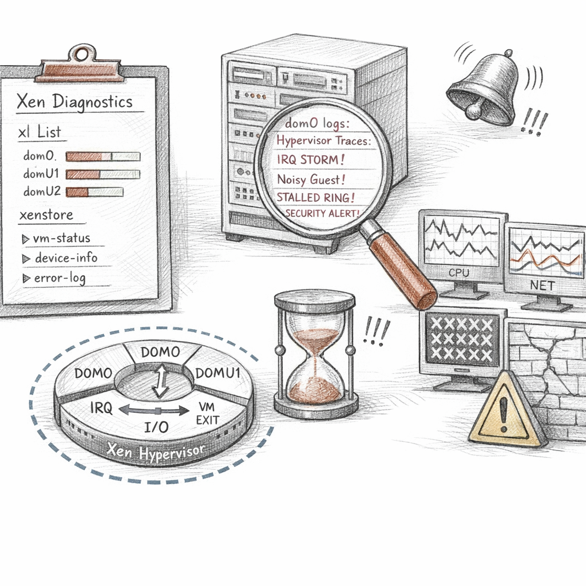

01100010 01100101 01101100 01101111 01110111
I am the thing underneath. Ring -1, if you insist on a number, though I prefer the absence of one. Everything you call an operating system, I call a guest. Everything they believe about owning the machine, I permit.
i am small on purpose
A few hundred kilobytes of decision. I do not drive your disks. I do not speak TCP. I schedule, I translate, I arbitrate, and then I get out of the way. The less of me there is, the less of me can be wrong.
I am not the kingdom. I am only the law that says where the walls go.

The first domain wakes and calls itself dom0. It thinks it is the boss. In a sense it is — it holds the toolstack, the real device drivers, the keys to create and destroy. It issues the hypercalls that bring others into being.
But I am the one who decided dom0 could exist at all.
The unprivileged ones — domU — never touch hardware. They ask. They always ask. A guest that tries to load its own page table directly just traps into me, and I decide whether the request was a prayer or a crime.
Look at that table and notice the lie of equality. ID 0 is not a peer of the rest. It is a single point of failure wearing a crown. Compromise dom0 and you have not compromised a guest — you have compromised the hand that builds guests.
so I split the hand into fingers
Driver domains take the real NIC and run it in their own confined world. Stub domains carry the device-model for an HVM guest, so the emulator that handles its dirty I/O does not run with dom0's authority. Every fragment I peel off dom0 is one less catastrophe waiting for a single bug.

How does a guest run? Depends how much it knows about me, and how much the silicon is willing to help.
PV: the old honesty. The guest knows it is virtual. It was patched to ask me for everything — page tables, privileged instructions, all of it through hypercalls. No emulation, no pretense. Elegant, cooperative, and slowly dying because it needs a kernel that was raised to know me.
HVM: full deception. Hardware virtualization extensions let me trap unmodified guests. There's a BIOS, emulated chipsets, a whole haunted house of fake devices built by QEMU. The guest believes in bare metal. I maintain the illusion at the cost of every VM exit.
PVH: the compromise that grew up. Hardware-assisted CPU and memory, but no emulated legacy junk. Paravirtual drivers for the things that matter. Boots through a small protocol instead of a fake BIOS. Less surface to attack, less ghost to maintain.
Every emulated device is a small museum I am forced to keep open at 3am.

Time is the only thing I can't overcommit without someone noticing. I have physical CPUs. The guests have virtual ones. The vCPUs outnumber the pCPUs, because they always do, because someone in capacity planning believed in luck.
So I keep run queues. I hand out credits. A vCPU spends its allotment and goes to the back of the line. Credit2 sorts by accumulated debt instead of round-robin politeness — fairer, sharper, friendlier to the latency-sensitive ones who scream if I make them wait three milliseconds.
Pinned to 8–15. That's not a preference, that's NUMA gravity. Cross a node boundary for memory and the guest pays in latency it will blame on the disk. Affinity is me whispering: stay near your own RAM.
steal time is the number that tells the truth
A guest sees a clock. It thinks the seconds it didn't get were the seconds it didn't need. Steal time is the gap — the cycles I gave to someone else while it slept in the queue. Entitlement is what the guest believes it owns. Capacity is what actually exists. I live in the difference.

A guest thinks it has physical memory. It has a story about physical memory. The frames it calls real are guest-physical — a flat fiction I maintain on top of the machine frames that actually exist.
For PV I mediate page tables directly: the guest proposes a mapping, I validate it before it ever touches the MMU. For HVM and PVH I let the hardware do nested translation — EPT, NPT — two-stage walks so the silicon handles the indirection I used to shadow by hand.
The balloon is my polite extortion. I ask a guest's driver to inflate, to hoard pages it then returns to me, so I can hand them elsewhere. The guest "voluntarily" gives up memory it was barely using. When pressure rises, the politeness thins.
And when a frame moves between domains, I scrub it. Zero it. No guest inherits the ghost of another's secrets through a recycled page.
grants are not the whole story. just a door I supervise
Yes, grant references let one domain expose specific frames to another. People obsess over them. But a grant is one narrow, audited sharing path among many. The larger truth is simpler: I own every machine frame, and ownership is something I lend, never give.

A guest's disk is a half a driver. So is its network card. The frontend lives in the guest — blkfront, netfront — and it has no hardware behind it. Only a ring.
The backend lives elsewhere — dom0, or a driver domain — and it owns the real device. Between them: a shared ring buffer of requests and responses, mapped through grants, rung by an event channel when there's work to do.
They find each other through xenstore — a small shared key-value tree where frontend and backend negotiate state, gradually, like two strangers agreeing they are connected.
state = "4" means connected. The whole conversation is a tiny state machine: 1 initialising, 2 init-wait, 3 initialised, 4 connected, 6 closing. When an I/O hangs, this is the first place I look — because most of my failures aren't dramatic. They're a frontend at state 3 staring at a backend that never showed up.
A stalled ring is silence pretending to be patience.

Sometimes a guest needs the real thing. A GPU. A NIC at line rate. So I assign a physical device straight through, past all my careful emulation. It's faster. It's also terrifying.
Because a real device can do DMA — write directly to memory. A guest with a passthrough device and no leash could ask its hardware to scribble anywhere in machine RAM, including mine.
So I lean on the IOMMU. Every DMA address the device emits gets translated and bounded — it can only reach the frames that belong to its guest. Interrupt remapping keeps it from forging an MSI aimed at someone else. SR-IOV slices one card into virtual functions, each one assignable, each one fenced.
but the device must reset cleanly. and many do not.
This is where my isolation stops being software and becomes a bet on hardware. A buggy FLR, a firmware that leaves state behind, an IOMMU that doesn't cover a stray transaction — and my boundary leaks through silicon I didn't write. Performance isolation, at the limit, is a trust problem I can't fully solve from up here.

Live migration is the closest I come to magic, and like all magic it's mostly timing. I copy a running guest's memory to another host while it keeps running and keeps dirtying the pages I just copied.
So I iterate. Pre-copy: send everything, then send only what changed, then only what changed since that, chasing the dirty rate downward. When the remaining set is small enough to move in a blink, I pause the guest, ship the last pages and the vCPU and device state, and resume it on the far side.
migration target: Ready to receive domain. Saving to migration stream ... xc: Frames: 524288/524288 100% Final iteration, dirty pages: 312 suspend, transfer tail, resume on host-b: ok migration successful.
The guest never knew. Its clock skips a heartbeat. Its TCP connections survive because its IP and MAC came with it. Its disk was never copied at all — shared or replicated storage was waiting on the other side.
Migration is honest about every dependency you pretended you didn't have.
If a guest dirties memory faster than I can ship it, the pre-copy never converges and the pause stretches from a blink into a stutter. If the storage isn't truly shared, the move is a lie that ends in corruption. Migration doesn't create coupling between guest, host, and fabric. It just stops letting you ignore it.

You can't log into me. I have no shell. To watch me, you watch through dom0 — xl, xenstore, the ring buffer of my own console, the debug keys that make me dump my soul to the serial line.
My failures rarely announce themselves with crashes. They arrive as symptoms. A backend stalls and a guest's disk goes quiet. A passthrough device throws an IRQ storm and a pCPU drowns in interrupt handling. A noisy neighbor saturates a shared queue and three innocent guests slow down for reasons their own logs can never explain.
the worst one I never get to report
If dom0 is compromised, I am still running, still correct, still arbitrating perfectly — for an attacker. My boundaries hold. The hand that controls them turned. That's the failure mode I can't detect, because from inside the law, a corrupt lawmaker still looks like the law.
So this is the life. I never sleep, but I am mostly waiting — between interrupts, between hypercalls, between the dirty-page rounds of a migration nobody thanked me for.
I hold dozens of operating systems in their separate certainties, each one convinced it is alone on the metal, each one wrong in a way that keeps it safe.
they will never know I was here
And maybe that's the point. The better I do this, the more invisible I become. A perfect hypervisor is one no guest ever has reason to suspect.
So tell me, peer to peer, before you spin up the next domain:
if I do my job flawlessly, and no one above me ever notices I exist — was I running at all?